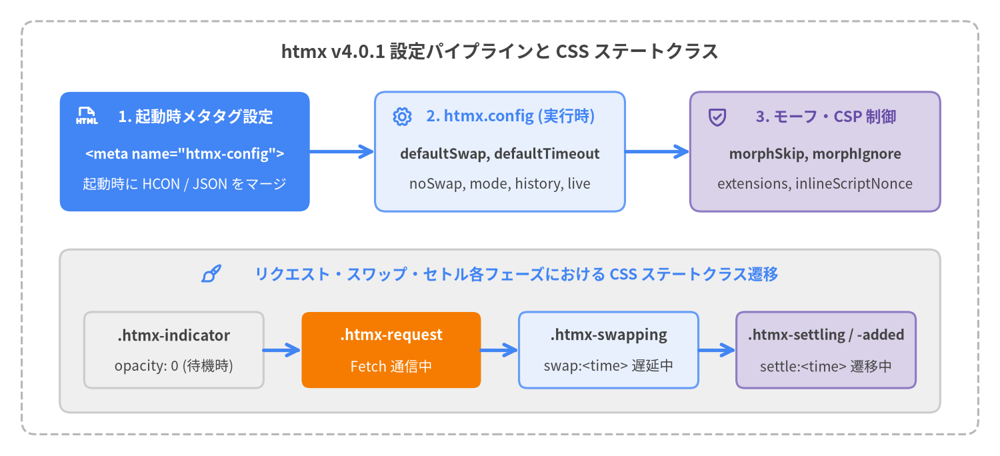

設定オプションと CSS ステートクラス
htmx v4.0.1 の設定は、<head> 内の <meta name="htmx-config"> タグによる宣言的設定（HCON 構文および JSON 構文の両方をサポート）またはグローバルな htmx.config オブジェクト（HtmxConfig）によるプログラム設定で行います。さらに htmx は、リクエストやスワップの進行状態に応じて 5 つの CSS ステートクラス（htmx-request, htmx-indicator, htmx-swapping, htmx-settling, htmx-added）を自動付与・除去し、JavaScript コードを書かずにローディング表示や CSS トランジションを制御できます。

Source Code
from drawlib.canvas import save, setup
from drawlib.icons import phosphor
from drawlib.lines import line
from drawlib.shapes import rectangle
from drawlib.styles import Styles
from drawlib.text import text
setup(width=184, height=84, dpi=150)
# Outer frame
rectangle((92, 42), width=176, height=76, style=Styles.MutedDashed.patch(shape_r=2.5))
text(
(92, 74.5),
"htmx v4.0.1 設定パイプラインと CSS ステートクラス",
style=Styles.DarkBold.patch(text_size=13.0),
)
# Top Row: Configuration Pipeline
rectangle((34, 56), width=46, height=22, style=Styles.PrimaryFlat.patch(shape_r=2.0))
phosphor.file_html((16, 62.5), width=4.0, style=Styles.WhiteBold)
text((36, 62.5), "1. 起動時メタタグ設定", style=Styles.WhiteBold.patch(text_size=11.0))
text((34, 55.5), '<meta name="htmx-config">', style=Styles.WhiteBold.patch(text_size=10.0))
text((34, 50.0), "起動時に HCON / JSON をマージ", style=Styles.White.patch(text_size=10.0))
line((57, 56), (69, 56), arrow_head="->", style=Styles.PrimaryBold)
rectangle((92, 56), width=46, height=22, style=Styles.PrimaryNeutral.patch(shape_r=2.0))
phosphor.gear((74, 62.5), width=4.0, style=Styles.PrimaryBold)
text((94, 62.5), "2. htmx.config (実行時)", style=Styles.PrimaryBold.patch(text_size=11.0))
text((92, 55.5), "defaultSwap, defaultTimeout", style=Styles.DarkBold.patch(text_size=10.0))
text((92, 50.0), "noSwap, mode, history, live", style=Styles.Dark.patch(text_size=10.0))
line((115, 56), (127, 56), arrow_head="->", style=Styles.PrimaryBold)
rectangle((150, 56), width=46, height=22, style=Styles.SecondaryNeutral.patch(shape_r=2.0))
phosphor.shield_check((132, 62.5), width=4.0, style=Styles.SecondaryBold)
text((152, 62.5), "3. モーフ・CSP 制御", style=Styles.SecondaryBold.patch(text_size=11.0))
text((150, 55.5), "morphSkip, morphIgnore", style=Styles.DarkBold.patch(text_size=10.0))
text((150, 50.0), "extensions, inlineScriptNonce", style=Styles.Dark.patch(text_size=10.0))
# Bottom Container: CSS State Class Lifecycle
rectangle((92, 23), width=162, height=30, style=Styles.Neutral.patch(shape_r=2.0))
phosphor.paint_brush((39, 33.5), width=4.0, style=Styles.PrimaryBold)
text(
(95, 33.5),
"リクエスト・スワップ・セトル各フェーズにおける CSS ステートクラス遷移",
style=Styles.PrimaryBold.patch(text_size=11.0),
)
rectangle((32, 19.5), width=33, height=14, style=Styles.Neutral.patch(shape_r=1.5))
text((32, 22.2), ".htmx-indicator", style=Styles.DarkBold.patch(text_size=10.5))
text((32, 16.5), "opacity: 0 (待機時)", style=Styles.Dark.patch(text_size=10.0))
line((48.5, 19.5), (55.5, 19.5), arrow_head="->", style=Styles.PrimaryBold)
rectangle((72, 19.5), width=33, height=14, style=Styles.AccentFlat.patch(shape_r=1.5))
text((72, 22.2), ".htmx-request", style=Styles.WhiteBold.patch(text_size=10.5))
text((72, 16.5), "Fetch 通信中", style=Styles.White.patch(text_size=10.0))
line((88.5, 19.5), (95.5, 19.5), arrow_head="->", style=Styles.PrimaryBold)
rectangle((112, 19.5), width=33, height=14, style=Styles.PrimaryNeutral.patch(shape_r=1.5))
text((112, 22.2), ".htmx-swapping", style=Styles.DarkBold.patch(text_size=10.5))
text((112, 16.5), "swap:<time> 遅延中", style=Styles.Dark.patch(text_size=10.0))
line((128.5, 19.5), (135.5, 19.5), arrow_head="->", style=Styles.PrimaryBold)
rectangle((152, 19.5), width=33, height=14, style=Styles.SecondaryNeutral.patch(shape_r=1.5))
text((152, 22.2), ".htmx-settling / -added", style=Styles.DarkBold.patch(text_size=10.0))
text((152, 16.5), "settle:<time> 遷移中", style=Styles.Dark.patch(text_size=10.0))
save()
設定シンボル・CSS ステートクラス一覧#
| シンボル | カテゴリ | 型 / デフォルト値 | 概要 |
|---|---|---|---|
<meta name="htmx-config"> |
エントリポイント | HCON / JSON 文字列 | __initHtmxConfig() で起動時にマージされる宣言的設定メタタグ。 |
htmx.config |
エントリポイント | HtmxConfig |
JavaScript から参照・変更可能なランタイム設定オブジェクト。 |
defaultSwap |
HtmxConfig |
"innerHTML" |
hx-swap 省略時のデフォルトスワップ方式。 |
defaultTimeout |
HtmxConfig |
60000 |
デフォルトのリクエストタイムアウト（ミリ秒、60秒）。 |
defaultSettleDelay |
HtmxConfig |
1 |
DOM スワップと CSS セトルフェーズの間のデフォルト遅延（ミリ秒）。 |
defaultFocusScroll |
HtmxConfig |
false |
スワップ後にフォーカス維持された要素へスクロールするかどうか。 |
noSwap |
HtmxConfig |
[204, 304] |
スワップをスキップする HTTP ステータスコードまたはワイルドカード（"4xx", "5xx"）。 |
allowEmptySwapAfterOOB |
HtmxConfig |
false |
OOB 要素抽出後に本文が空になった場合でもメインスワップを実行するかどうか。 |
implicitInheritance |
HtmxConfig |
false |
:inherited なしで親要素から子要素へ属性を暗黙継承するかどうか。 |
transitions |
HtmxConfig |
false |
すべてのスワップで View Transitions API をデフォルト有効にするかどうか。 |
logAll |
HtmxConfig |
false |
すべての htmx:* イベントを console.log に出力するかどうか。 |
mode |
HtmxConfig |
"same-origin" |
全リクエスト共通の Fetch CORS モード（"same-origin", "cors", "no-cors"）。 |
history |
HtmxConfig |
true |
ブラウザ履歴管理モード（true, false, "reload"）。 |
extensions |
HtmxConfig |
"" |
登録を許可する拡張機能名のカンマ区切りホワイトリスト（起動時のみ）。 |
prefix |
HtmxConfig |
"data-hx-" |
hx- に加えて認識する副属性プレフィックス（起動時のみ）。 |
metaCharacter |
HtmxConfig |
undefined (":") |
モディファイアやイベント名の区切り文字 : を置き換える文字。 |
indicatorClass |
HtmxConfig |
"htmx-indicator" |
待機時に非表示となり .htmx-request 内で表示されるインジケータクラス名。 |
requestClass |
HtmxConfig |
"htmx-request" |
リクエスト通信中にインジケータ対象要素へ付与されるクラス名。 |
includeIndicatorCSS |
HtmxConfig |
true |
デフォルトのインジケータ用 CSSStyleSheet を document.adoptedStyleSheets に注入するかどうか。 |
inlineScriptNonce |
HtmxConfig |
undefined |
スワップされた <script> 要素に自動付与する CSP nonce 値。 |
morphIgnore |
HtmxConfig |
["data-htmx-powered"] |
innerMorph / outerMorph 時に変更・削除しない属性名プレフィックス配列。 |
morphScanLimit |
HtmxConfig |
10 |
モーフスワップで兄弟ノードを照合する際の最大スキャン数。 |
morphSkip |
HtmxConfig |
"[hx-morph-skip]" |
モーフ処理を完全にスキップする要素の CSS セレクタ。 |
morphSkipChildren |
HtmxConfig |
"[hx-morph-skip-children]" |
属性のみ更新し子要素のモーフを凍結する要素の CSS セレクタ。 |
live |
HtmxConfig |
HxLive.Config |
hx-live リアクティブ拡張機能の設定オブジェクト。 |
htmx-request |
CSS クラス | ステートクラス | リクエスト進行中に hx-indicator 対象要素（または発火要素）に付与されます。 |
htmx-indicator |
CSS クラス | ステートクラス | ローディング表示要素を示します（待機時は opacity: 0、.htmx-request 時に opacity: 1）。 |
htmx-swapping |
CSS クラス | ステートクラス | swap:<time> 遅延開始前から DOM 挿入直後まで target に付与されます。 |
htmx-settling |
CSS クラス | ステートクラス | settle:<time> 遅延による CSS トランジション進行中に target に付与されます。 |
htmx-added |
CSS クラス | ステートクラス | htmx:before:settle から htmx:after:settle までの間、新規挿入された各要素に付与されます。 |
設定エントリポイント#
<meta name="htmx-config">#
htmx インスタンス生成時（__initHtmxConfig()）に一度だけ読み取られる宣言的設定タグです。content 属性は HCON.merge(metaConfig.content, this.config) によってパースされるため、簡潔な HCON 構文（live.inputDebounce:250 のようなドット階層記法を含む）と標準 JSON 構文 のどちらでも記述できます。起動時のみ有効な設定（prefix, extensions, includeIndicatorCSS, および内蔵スタイルシートで使用される indicatorClass / requestClass）は、必ず htmx.js 読み込み前に <meta name="htmx-config"> で指定する必要があります。
構文
<!-- HCON 構文（簡潔な key:value 形式） -->
<meta name="htmx-config" content="defaultSwap:outerMorph, transitions:true, defaultTimeout:15000">
<!-- JSON 構文 -->
<meta name="htmx-config" content='{"defaultSwap":"outerMorph","transitions":true,"noSwap":[204,304,"5xx"]}'>
属性詳細
| 属性 | フォーマット | 評価タイミング | 説明 |
|---|---|---|---|
name="htmx-config" |
固定識別子 | new Htmx() コンストラクタ |
htmx.js ロード時に document.querySelector('meta[name="htmx-config"]') で検索されます。 |
content |
HCON または JSON | new Htmx() コンストラクタ |
HCON.merge() によって htmx.config にディープマージされます（__proto__, constructor, prototype キーはプロトタイプ汚染防止のため無視されます）。 |
使用例
<head>
<meta name="htmx-config" content="
defaultSwap: innerMorph,
transitions: true,
extensions: 'preload, sse',
live.inputDebounce: 200
">
<script src="/js/htmx.js"></script>
</head>
htmx.config#
グローバルな htmx インスタンスに保持されるミュータブルなランタイム設定オブジェクト（HtmxConfig）です。リクエスト作成時やスワップ時、モーフ処理時に動的に参照されるプロパティは、実行中に htmx.config.<prop> = value でいつでも変更できます。
TypeScript シグネチャ
htmx.config: HtmxConfig;
起動時専用プロパティと実行時変更可能プロパティ
| 変更可能スコープ | 対象プロパティ | 備考 |
|---|---|---|
起動時専用（<meta name="htmx-config"> で設定） |
prefix, extensions, includeIndicatorCSS |
new Htmx() コンストラクタ（__initHtmxConfig() および __initRequestIndicatorCss()）で一度だけ読み取られます。ページ読み込み後に htmx.config.extensions や htmx.config.prefix を書き換えても初期セレクタや __approvedExt には反映されません。 |
実行時変更可能（<meta> または htmx.config.*） |
defaultSwap, defaultTimeout, defaultSettleDelay, defaultFocusScroll, noSwap, allowEmptySwapAfterOOB, implicitInheritance, transitions, logAll, mode, history, metaCharacter, inlineScriptNonce, morphIgnore, morphScanLimit, morphSkip, morphSkipChildren, live |
各リクエスト発行、スワップ、モーフ処理のたびに動的に参照されます。 |
使用例
// ブラウザコンソールや初期化スクリプトからイベントログとタイムアウトを動的に変更
htmx.config.logAll = true;
htmx.config.defaultTimeout = 30000;
htmx.config.noSwap = [204, 304, '5xx'];
HtmxConfig プロパティ#
defaultSwap#
要素に hx-swap 属性が指定されていない場合（かつ HX-Reswap ヘッダや hx-status による上書きがない場合）に使用されるデフォルトのスワップ方式を指定します。
TypeScript シグネチャ
defaultSwap: string; // @default "innerHTML"
プロパティ仕様
| プロパティ | 型 | デフォルト値 | 指定可能な値 |
|---|---|---|---|
htmx.config.defaultSwap |
string |
"innerHTML" |
"innerHTML", "outerHTML", "outerSync", "innerMorph", "outerMorph", "textContent", "before" ("beforebegin"), "prepend" ("afterbegin"), "append" ("beforeend"), "after" ("afterend"), "delete", "none"、および各種スワップモディファイア。 |
使用例
<meta name="htmx-config" content="defaultSwap:innerMorph">
defaultTimeout#
進行中の fetch() リクエストを 'timeout' 理由で中断（abort）し htmx:error を発火するまでのデフォルトタイムアウト時間（ミリ秒）です。htmx v4 ではデフォルト値が htmx 2 の 0（無制限）から 60000（60秒）に変更されました。無制限にする場合は 0 を設定し、要素単位で変更する場合は hx-config="timeout:10s" を使用します。
TypeScript シグネチャ
defaultTimeout: number; // @default 60000
プロパティ仕様
| プロパティ | 型 | デフォルト値 | 説明 |
|---|---|---|---|
htmx.config.defaultTimeout |
number |
60000 |
ミリ秒単位のタイムアウト時間。0 を指定すると自動タイムアウトタイマー（setTimeout(() => ctx.request.abort('timeout'), timeout)）が無効になります。 |
使用例
// グローバルタイムアウトを 15 秒に設定
htmx.config.defaultTimeout = 15000;
defaultSettleDelay#
一致する [id] 要素で CSS トランジションタスクが発生した際、DOM 挿入（スワップフェーズ）から属性復元（セトルフェーズ）までに待機するデフォルト遅延時間（ミリ秒）です。hx-swap="innerHTML settle:100ms" で要素ごとに上書きできます。
TypeScript シグネチャ
defaultSettleDelay: number; // @default 1
プロパティ仕様
| プロパティ | 型 | デフォルト値 | 説明 |
|---|---|---|---|
htmx.config.defaultSettleDelay |
number |
1 |
.htmx-settling が付与され、settleTasks が新しい class, style, width, height 属性を適用するまでの待機ミリ秒。 |
使用例
// CSS トランジションを確実に発火させるためデフォルトセトル遅延を 20ms に変更
htmx.config.defaultSettleDelay = 20;
defaultFocusScroll#
innerHTML または outerHTML スワップで id の一致によりフォーカスが復元された際、フォーカス要素まで画面をスクロールするかどうかを制御します。hx-swap の focusScroll:true / focusScroll:false モディファイアで個別に上書き可能です。
TypeScript シグネチャ
defaultFocusScroll: boolean; // @default false
プロパティ仕様
| プロパティ | 型 | デフォルト値 | 説明 |
|---|---|---|---|
htmx.config.defaultFocusScroll |
boolean |
false |
newElt.focus({ preventScroll: !defaultFocusScroll }) として渡されます。 |
使用例
htmx.config.defaultFocusScroll = true;
noSwap#
メインの DOM スワップをスキップ（ctx.swap = "none" に設定）する HTTP ステータスコードまたはワイルドカードパターンの配列です。4xx/5xx をデフォルトで無視していた htmx 2 とは異なり、htmx v4 では 204 No Content と 304 Not Modified 以外のすべてのステータスコードをスワップします。
TypeScript シグネチャ
noSwap: number[]; // 実行時は "4xx", "5xx", "50x" 等のワイルドカード文字列も指定可能 (@default [204, 304])
プロパティ仕様
| プロパティ | 型 | デフォルト値 | 説明 |
|---|---|---|---|
htmx.config.noSwap |
Array<number | string> |
[204, 304] |
__handleStatusCodes() にて完全一致（"404"）、2桁プレフィックス（"50x"）、1桁プレフィックス（"5xx"）の順で照合されます。一致した場合は hx-status:* より優先して ctx.swap = "none" となります。 |
使用例
<!-- 5xx サーバーエラー時はエラー HTML をターゲットにスワップしない -->
<meta name="htmx-config" content='{"noSwap": [204, 304, "5xx"]}'>
allowEmptySwapAfterOOB#
レスポンス内に Out-of-Band（hx-swap-oob）要素のみが含まれ、それらを抽出した後にメインコンテンツが空になった場合でも、メインターゲットへの空スワップ（ターゲット内のクリア）を実行するかどうかを制御します。なお、<hx-partial> 要素が含まれる場合はこの設定に関わらずメインの空スワップが防止されます（強制実行するには要素側で hx-swap="innerHTML swapEmpty:true" を指定します）。
TypeScript シグネチャ
allowEmptySwapAfterOOB: boolean; // @default false
プロパティ仕様
| プロパティ | 型 | デフォルト値 | 説明 |
|---|---|---|---|
htmx.config.allowEmptySwapAfterOOB |
boolean |
false |
false の場合、hx-swap-oob のみのレスポンスではメインの target を変更しません。true の場合、残った空フラグメントで target をスワップします。 |
使用例
htmx.config.allowEmptySwapAfterOOB = true;
implicitInheritance#
htmx v4 の明示的な属性継承モデル（:inherited モディファイア必須）を、htmx 2 と同じ暗黙的属性継承モデルへ切り替えます。true に設定すると、子要素は親要素の hx-target, hx-swap, hx-include, hx-vals, hx-headers, hx-boost, hx-confirm, hx-indicator, hx-disable, hx-sync, hx-encoding, hx-config を :inherited なしで自動的に継承します（ただし hx-get, hx-post, hx-action, hx-trigger, hx-validate は implicitInheritance: true でも暗黙継承されません）。
TypeScript シグネチャ
implicitInheritance: boolean; // @default false
プロパティ仕様
| プロパティ | 型 | デフォルト値 | 説明 |
|---|---|---|---|
htmx.config.implicitInheritance |
boolean |
false |
false（デフォルト）では :inherited が付いた属性（例: hx-target:inherited="#out"）のみが継承されます。true の場合は親属性を自動継承し、拡張機能フック htmx_after_implicitInheritance を発火します。 |
使用例
<!-- htmx 2 からの移行プロジェクトで暗黙の属性継承を有効化 -->
<meta name="htmx-config" content="implicitInheritance:true">
transitions#
すべてのスワップ操作でブラウザの View Transitions API（document.startViewTransition()）をグローバルに有効化します。個別の要素で無効化する場合は hx-swap="innerHTML transition:false" を指定します。
TypeScript シグネチャ
transitions: boolean; // @default false
プロパティ仕様
| プロパティ | 型 | デフォルト値 | 説明 |
|---|---|---|---|
htmx.config.transitions |
boolean |
false |
各リクエストの ctx.transition の初期値となります。true かつブラウザが document.startViewTransition に対応している場合、スワップタスクはトランジションキューで直列実行され、htmx:before:viewTransition / htmx:after:viewTransition が発火します。 |
使用例
<meta name="htmx-config" content="transitions:true">
logAll#
すべての htmx イベント（htmx:before:init, htmx:config:request, htmx:after:swap 等）を、発火要素および detail オブジェクトと共に console.log へ出力します。なお、detail.error を持つイベント（htmx:error）は常に console.error、detail.warn を持つイベントは常に console.warn に出力されます。
TypeScript シグネチャ
logAll: boolean; // @default false
プロパティ仕様
| プロパティ | 型 | デフォルト値 | 説明 |
|---|---|---|---|
htmx.config.logAll |
boolean |
false |
__trigger() で発火されるすべての通常イベントを htmx: <eventName> { elt, detail } 形式でコンソールに出力します。 |
使用例
// デバッグ時に全イベントのトレースログを有効化
htmx.config.logAll = true;
mode#
すべての htmx リクエストの Fetch RequestMode（ctx.request.mode）を設定します。CORS モードはセキュリティ上重要であるため、グローバル設定の htmx.config.mode が常に優先され、要素単位の hx-config 属性による上書きは無視されます。
TypeScript シグネチャ
mode: 'same-origin' | 'cors' | 'no-cors'; // @default "same-origin"
プロパティ仕様
| プロパティ | 型 | デフォルト値 | 説明 |
|---|---|---|---|
htmx.config.mode |
'same-origin' | 'cors' | 'no-cors' |
'same-origin' |
htmx 2 の selfRequestsOnly に代わる設定です。デフォルトの 'same-origin' では同一オリジン外へのリクエストが遮断されるため、別サブドメインの API へリクエストする場合は 'cors' を設定します。 |
使用例
<!-- CORS 対応の別オリジン API への htmx リクエストを許可 -->
<meta name="htmx-config" content="mode:cors">
history#
ブラウザ履歴の管理動作（hx-push-url, hx-replace-url, HX-Push-Url, HX-Replace-Url, および hx-boost リンク）を制御します。htmx v4 では localStorage スナップショットが廃止され、戻る・進む操作時には HX-History-Restore-Request: true ヘッダ付きの GET リクエストによる outerSync 復元（または hx-history-cache 拡張機能による sessionStorage 復元）が行われます。
TypeScript シグネチャ
history: boolean | 'reload'; // @default true
プロパティ仕様
| プロパティ | 型 | デフォルト値 | 説明 |
|---|---|---|---|
htmx.config.history |
boolean | 'reload' |
true |
true: URL を push/replace し、戻る・進む操作時に htmx.ajax('GET', path, { swap: 'outerSync' }) で AJAX 復元します。false: 履歴更新および履歴リスナーを完全に無効化します。"reload": URL の push/replace は行いますが、戻る・進む操作時には location.reload() でページ全体を再読み込みします。 |
使用例
<!-- URL は更新しつつ、戻る・進む操作時はブラウザのフルリロードを行う -->
<meta name="htmx-config" content="history:reload">
extensions#
htmx.registerExtension(name, ext) による登録を許可する拡張機能名のカンマ区切りホワイトリストです。起動時に一度だけ this.__approvedExt に読み込まれます。空文字列（""）の場合はすべての拡張機能の登録が許可されます。
TypeScript シグネチャ
extensions: string; // @default ""
プロパティ仕様
| プロパティ | 型 | デフォルト値 | 説明 |
|---|---|---|---|
htmx.config.extensions |
string |
"" |
起動時専用のカンマ区切り登録名リスト（例: "preload, sse, hx-live"）。リストに含まれない拡張機能は registerExtension() 呼び出し時に拒否されます。 |
使用例
<!-- preload と sse 拡張機能のみ登録を許可 -->
<meta name="htmx-config" content="extensions:'preload, sse'">
prefix#
hx- に加えて認識されるセカンダリ属性プレフィックス（例: data-hx-get, data-hx-target, data-hx-on:click）です。<meta name="htmx-config"> で "" に設定するとセカンダリプレフィックスの検索を無効化できます。
TypeScript シグネチャ
prefix: string; // @default "data-hx-"
プロパティ仕様
| プロパティ | 型 | デフォルト値 | 説明 |
|---|---|---|---|
htmx.config.prefix |
string |
"data-hx-" |
起動時専用の追加プレフィックス。hx-* は常に有効であり、prefix が空でない場合は name.replace('hx-', prefix) も併せて検索されます。 |
使用例
<!-- hx-* のみを使用し data-hx-* 検索を無効化 -->
<meta name="htmx-config" content='{"prefix": ""}'>
metaCharacter#
属性モディファイア（hx-target:inherited, hx-include:append, hx-status:422, hx-on:click）および DOM に発火される htmx イベント名（htmx:after:swap）に含まれるコロン（:）を別の文字に置き換えます。テンプレートエンジンやフレームワークが属性名内の : を予約している場合に便利です。
TypeScript シグネチャ
metaCharacter?: string; // @default undefined (":" を使用)
プロパティ仕様
| プロパティ | 型 | デフォルト値 | 説明 |
|---|---|---|---|
htmx.config.metaCharacter |
string | undefined |
undefined |
設定された場合（例: "-" や "_"）、__maybeAdjustMetaCharacter() がモディファイアや DOM イベント名の : を置換します（拡張機能フック名は常に _ 区切りです）。 |
使用例
<meta name="htmx-config" content="metaCharacter:-">
<!-- hx-target-inherited="#out" や hx-on-click="doWork()" と記述可能になります -->
indicatorClass#
ローディングインジケータ要素を示す CSS クラス名です。起動時に内蔵スタイルシートを生成する際に参照されます。
TypeScript シグネチャ
indicatorClass: string; // @default "htmx-indicator"
プロパティ仕様
| プロパティ | 型 | デフォルト値 | 説明 |
|---|---|---|---|
htmx.config.indicatorClass |
string |
"htmx-indicator" |
__initRequestIndicatorCss() で .${indicator}{opacity:0;visibility:hidden} ルールを生成するために使用されます。 |
使用例
<meta name="htmx-config" content="indicatorClass:is-loading-spinner">
requestClass#
リクエスト進行中に hx-indicator の対象要素（指定がない場合は sourceElement 自身）に付与される CSS クラス名です。内部の参照カウンタ（s.rc）で管理されるため、同じインジケータを共有する複数のリクエストが並行実行されても、最後のリクエストが完了するまでクラスが維持されます。
TypeScript シグネチャ
requestClass: string; // @default "htmx-request"
プロパティ仕様
| プロパティ | 型 | デフォルト値 | 説明 |
|---|---|---|---|
htmx.config.requestClass |
string |
"htmx-request" |
__showIndicators(ctx) と __hideIndicators(ctx.indicators) によって付与・除去されます。 |
使用例
<meta name="htmx-config" content="requestClass:is-fetching">
includeIndicatorCSS#
起動時に .htmx-indicator と .htmx-request 用のデフォルト CSSStyleSheet を生成して document.adoptedStyleSheets に自動追加するかどうかを制御します。独自の CSS でインジケータの表示制御を行う場合は <meta name="htmx-config"> で false に設定します。
TypeScript シグネチャ
includeIndicatorCSS: boolean; // @default true
プロパティ仕様
| プロパティ | 型 | デフォルト値 | 説明 |
|---|---|---|---|
htmx.config.includeIndicatorCSS |
boolean |
true |
true の場合、.htmx-indicator{opacity:0;visibility:hidden} .htmx-request .htmx-indicator, .htmx-request.htmx-indicator{opacity:1;visibility:visible;transition:opacity 200ms ease-in} を document.adoptedStyleSheets に注入します。 |
使用例
<meta name="htmx-config" content="includeIndicatorCSS:false">
inlineScriptNonce#
スワップされた HTML フラグメント内の <script> タグを有効化する際（__processScripts()）、新しく生成される script 要素の nonce プロパティ（newScript.nonce）に自動設定される Content Security Policy (CSP) 用の nonce 文字列です。
TypeScript シグネチャ
inlineScriptNonce?: string; // @default undefined
プロパティ仕様
| プロパティ | 型 | デフォルト値 | 説明 |
|---|---|---|---|
htmx.config.inlineScriptNonce |
string | undefined |
undefined |
スワップ時に <script> タグを再生成する際、newScript.nonce = this.config.inlineScriptNonce を適用します。 |
使用例
<meta name="htmx-config" content="inlineScriptNonce:rAnd0mCspN0nce2026">
morphIgnore#
モーフスワップ（innerMorph, outerMorph）および outerSync の属性コピー処理（__copyAttributes()）において、既存 DOM 要素上で上書き・削除せずに保持する属性名プレフィックスの配列です。デフォルトでは htmx の初期化済みマーカー属性 ["data-htmx-powered"] が保護されています。
TypeScript シグネチャ
morphIgnore: string[]; // @default ["data-htmx-powered"]
プロパティ仕様
| プロパティ | 型 | デフォルト値 | 説明 |
|---|---|---|---|
htmx.config.morphIgnore |
string[] |
["data-htmx-powered"] |
morphIgnore 内のいずれかのプレフィックスで始まる属性（attr.name.startsWith(p)）は、モーフ時に上書きも削除もされません。 |
使用例
// クライアント側で付与した状態属性や Alpine.js 属性をモーフ時に保護
htmx.config.morphIgnore.push('data-client-state', 'x-');
morphScanLimit#
innerMorph または outerMorph スワップで永続 ID を持たない要素を照合する際、__findBestMatch() および __matchesUpcomingSibling() が後続の兄弟要素を先読みスキャンする最大数です。
TypeScript シグネチャ
morphScanLimit: number; // @default 10
プロパティ仕様
| プロパティ | 型 | デフォルト値 | 説明 |
|---|---|---|---|
htmx.config.morphScanLimit |
number |
10 |
ID のない兄弟ノード間で完全一致（isEqualNode）やソフトマッチを探す際の先読み上限数を指定します。 |
使用例
// ID を持たない長いリストのモーフ精度を高めるため先読み上限を拡大
htmx.config.morphScanLimit = 25;
morphSkip#
innerMorph および outerMorph スワップ時に、属性と子要素の両方を完全にスキップ（変更せずそのまま維持）する要素の CSS セレクタです。
TypeScript シグネチャ
morphSkip?: string; // @default "[hx-morph-skip]"
プロパティ仕様
| プロパティ | 型 | デフォルト値 | 説明 |
|---|---|---|---|
htmx.config.morphSkip |
string | undefined |
"[hx-morph-skip]" |
__morphNode() の冒頭で oldNode.matches(this.config.morphSkip) により判定され、一致した要素は属性コピーも子要素モーフも行わずに終了します。 |
使用例
// 地図ウィジェットや動画プレーヤーをグローバルにモーフ対象外に設定
htmx.config.morphSkip = '[hx-morph-skip], mapbox-gl-canvas, .video-player';
morphSkipChildren#
モーフスワップ時に要素自身の属性は更新しつつ、その子要素のモーフだけを凍結する要素の CSS セレクタです。ホスト要素の属性に基づいて独自に内部 DOM を描画する Web Components やリッチテキストエディタに最適です。
TypeScript シグネチャ
morphSkipChildren?: string; // @default "[hx-morph-skip-children]"
プロパティ仕様
| プロパティ | 型 | デフォルト値 | 説明 |
|---|---|---|---|
htmx.config.morphSkipChildren |
string | undefined |
"[hx-morph-skip-children]" |
__morphNode() 内で __copyAttributes(oldNode, newNode) を実行した後に判定され、一致した場合は __morphChildren() をスキップします。 |
使用例
htmx.config.morphSkipChildren = '[hx-morph-skip-children], sortable-list, rich-text-editor';
live#
hx-live リアクティブ拡張機能（src/ext/hx-live.js）の設定サブオブジェクト（HxLive.Config）です。<meta name="htmx-config"> のドット記法（live.inputDebounce:200）または htmx.config.live から設定できます。
TypeScript 定義
export namespace HxLive {
export interface Config {
/**
* Debounces `input` events by a number of milliseconds or an interval string.
* @default 100
*/
inputDebounce?: number | string;
/**
* Sets the short binding prefix (`':'` -> `:text`, `'hx:'` -> `hx:text`, `''`/`false` -> disabled).
* Alpine.js detection disables the default.
* @default ":"
*/
bindPrefix?: string | false;
/**
* Adds `$()` as a `q()` alias in `hx-live`, `:attr`, `hx-on`, `js:` attributes, and `hx-trigger` filters.
* @default false
*/
useDollar?: boolean;
}
}
プロパティ一覧
| プロパティ | 型 | デフォルト値 | 説明 |
|---|---|---|---|
live.inputDebounce |
number | string |
100 |
hx-live における input イベントのデバウンス時間（ミリ秒または "150ms" 等の時間文字列）。 |
live.bindPrefix |
string | false |
":" |
バインディング属性の短縮プレフィックス（:text, :class, :disabled）。Vue や Alpine.js と併用する場合は "hx:" や false に設定します。 |
live.useDollar |
boolean |
false |
hx-live, :attr, hx-on, js: 属性、および hx-trigger フィルタ式内で q() の別名として $() を使用可能にします。 |
使用例
<meta name="htmx-config" content="live.inputDebounce:150, live.bindPrefix:'hx:', live.useDollar:true">
CSS ステートクラス#
htmx-request#
リクエストが通信中の間、hx-indicator 属性で指定された要素（hx-indicator がない場合は document.body を除くリクエスト発火要素 sourceElement 自身）に付与されるクラスです。hx-confirm の確認完了直後（__showIndicators）に付与され、リクエストおよび ctx.extensionPromise の完了後に finally ブロック（__hideIndicators）で除去されます。
CSS セレクタと動作
/* includeIndicatorCSS: true の場合に自動注入されるルール */
.htmx-request .htmx-indicator,
.htmx-request.htmx-indicator {
opacity: 1;
visibility: visible;
transition: opacity 200ms ease-in;
}
ライフサイクル詳細
| 項目 | 内容 |
|---|---|
| 付与対象要素 | hx-indicator で解決された要素（:inherited や closest div 等の拡張セレクタ対応）、または省略時は ctx.sourceElement。 |
| 付与タイミング | htmx:before:request の直前（hx-confirm 通過後）。 |
| 除去タイミング | __issueRequest の finally ブロック内で htmx:finally:request 発火後（HX-Location による連鎖リクエスト時は ctx.keepIndicators により維持されます）。 |
| 並行リクエスト制御 | elt._htmx_state.rc の参照カウンタにより、同一インジケータを共有する複数リクエストのすべてが完了するまでクラスが保持されます。 |
使用例
<button hx-post="/reports/generate" class="btn">
<span class="btn-label">レポート生成</span>
<span class="htmx-indicator">生成中...</span>
</button>
<style>
button.htmx-request { opacity: 0.7; cursor: wait; }
</style>
htmx-indicator#
ローディングスピナー、プログレスバー、スケルトン表示などの要素に付与するクラスです。htmx.config.includeIndicatorCSS が true（デフォルト）の場合、htmx は起動時に adoptedStyleSheets へスタイルを注入し、通常時は .htmx-indicator を非表示（opacity: 0; visibility: hidden）にし、親要素または自身が .htmx-request を持った時に表示します。
CSS セレクタと動作
/* 内蔵の待機時スタイル */
.htmx-indicator {
opacity: 0;
visibility: hidden;
}
/* 高速なレスポンス（200ms未満）でスピナーがちらつくのを防ぐ transition-delay の例 */
.htmx-request .htmx-indicator,
.htmx-request.htmx-indicator {
transition: opacity 200ms ease-in 200ms;
}
ライフサイクル詳細
| 項目 | 内容 |
|---|---|
| 付与対象要素 | リクエスト要素の内部、または hx-indicator="#spinner" で参照される任意のインジケータ要素。 |
| デフォルトスタイル | opacity: 0; visibility: hidden（レイアウト領域を確保したまま非表示にします。領域ごと隠したい場合は display: none を独自 CSS で指定してください）。 |
| カスタマイズ | htmx.config.indicatorClass でクラス名を変更するか、htmx.config.includeIndicatorCSS = false で内蔵 CSS を無効化できます。 |
使用例
<div>
<input type="search" name="q"
hx-get="/search"
hx-trigger="input changed delay:300ms"
hx-target="#results"
hx-indicator="#search-spinner">
<span id="search-spinner" class="htmx-indicator">検索中...</span>
</div>
<div id="results"></div>
htmx-swapping#
__insertContent() の開始時、swap:<time> モディファイアによる遅延待機の直前にスワップ先の target 要素へ付与され、DOM の挿入・削除が完了した直後の finally ブロックで除去されます。削除や置換の前に既存要素をフェードアウトさせる退場アニメーションに使用します。
CSS セレクタと動作
/* 削除前に 200ms かけて行をフェードアウト */
tr.htmx-swapping td {
opacity: 0;
transition: opacity 200ms ease-out;
}
ライフサイクル詳細
| 項目 | 内容 |
|---|---|
| 付与対象要素 | task.target（解決されたスワップターゲット要素）。 |
| 付与タイミング | __insertContent(task) 内で await htmx.timeout(task.swapSpec?.swap) を待つ直前。 |
| 除去タイミング | DOM ノードの挿入・置換・削除が完了した直後（htmx:before:settle の前）。 |
使用例
<!-- .htmx-swapping で 200ms フェードアウトさせてから行を DOM から削除 -->
<button hx-delete="/items/42"
hx-target="closest tr"
hx-swap="delete swap:200ms">
削除
</button>
htmx-settling#
同一 [id] を持つ要素間で CSS トランジションタスクが発生した際、セトル遅延（settle:<time> または htmx.config.defaultSettleDelay）の待機中にスワップ先の target 要素へ付与されるクラスです。
CSS セレクタと動作
#status-box.htmx-settling {
transition: background-color 300ms ease, transform 300ms ease;
}
ライフサイクル詳細
| 項目 | 内容 |
|---|---|
| 付与対象要素 | task.target（innerHTML または outerHTML 挿入後のターゲット要素）。 |
| 付与タイミング | htmx:before:settle 発火および .htmx-added 付与の後、await htmx.timeout(settleDelay) の直前。 |
| 除去タイミング | settleTasks が最終的な属性値を適用した直後（htmx:after:settle 発火の直前）。 |
使用例
<div id="progress-bar"
hx-get="/job/status"
hx-trigger="every 2s"
hx-swap="outerHTML settle:300ms"
style="width: 45%; transition: width 300ms ease;">
</div>
htmx-added#
htmx:before:settle の直後に、新しく挿入された newContent 内の各トップレベル要素へ付与され、htmx:after:settle の直後に除去されるクラスです。settle:<time> と組み合わせることで、新規追加された要素のフェードイン・スライドインなどの登場アニメーションを純粋な CSS だけで記述できます。
CSS セレクタと動作
/* 新規挿入されたカードを opacity: 0 から開始し、.htmx-added 除去時にフェードイン */
.card {
opacity: 1;
transition: opacity 250ms ease-in;
}
.card.htmx-added {
opacity: 0;
}
ライフサイクル詳細
| 項目 | 内容 |
|---|---|
| 付与対象要素 | スワップタスクで挿入された newContent 内の各要素。 |
| 付与タイミング | htmx:before:settle 発火の直後（settleDelay 待機前）。 |
| 除去タイミング | htmx:after:settle 発火の直後、各要素に対する htmx.process(elt) および autofocus 処理の前。 |
使用例
<div id="feed" hx-get="/feed/latest" hx-swap="afterbegin settle:50ms">
<!-- 先頭に追加された .card 要素は最初 .htmx-added (opacity: 0) を持ち、
50ms 後に .htmx-added が外れて opacity: 1 へアニメーションします -->
</div>